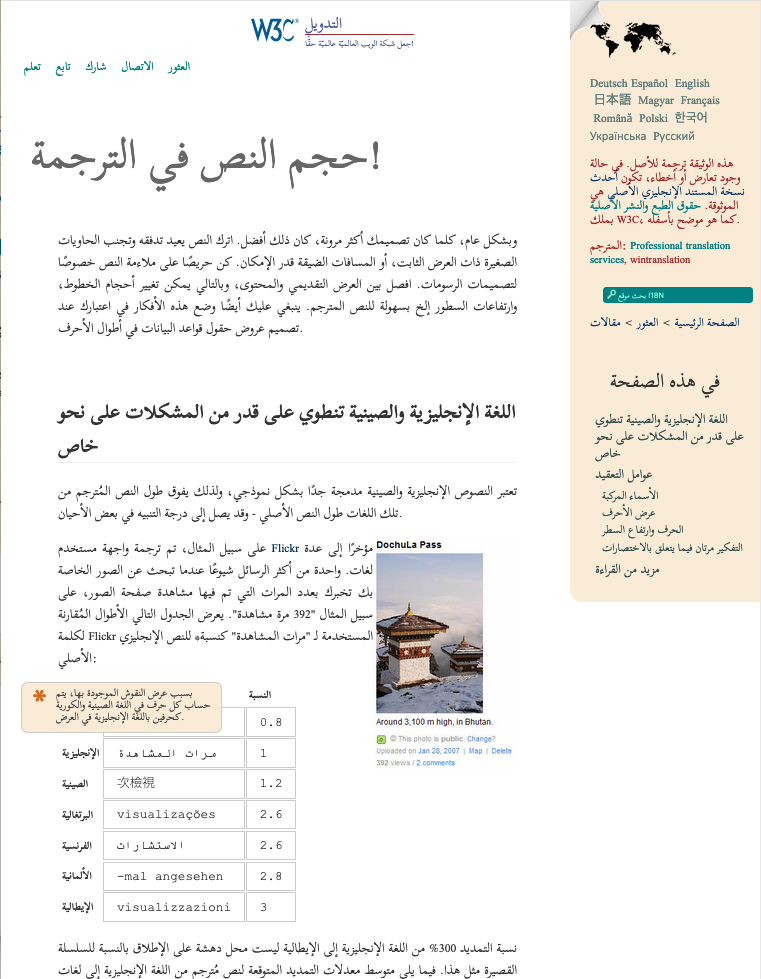
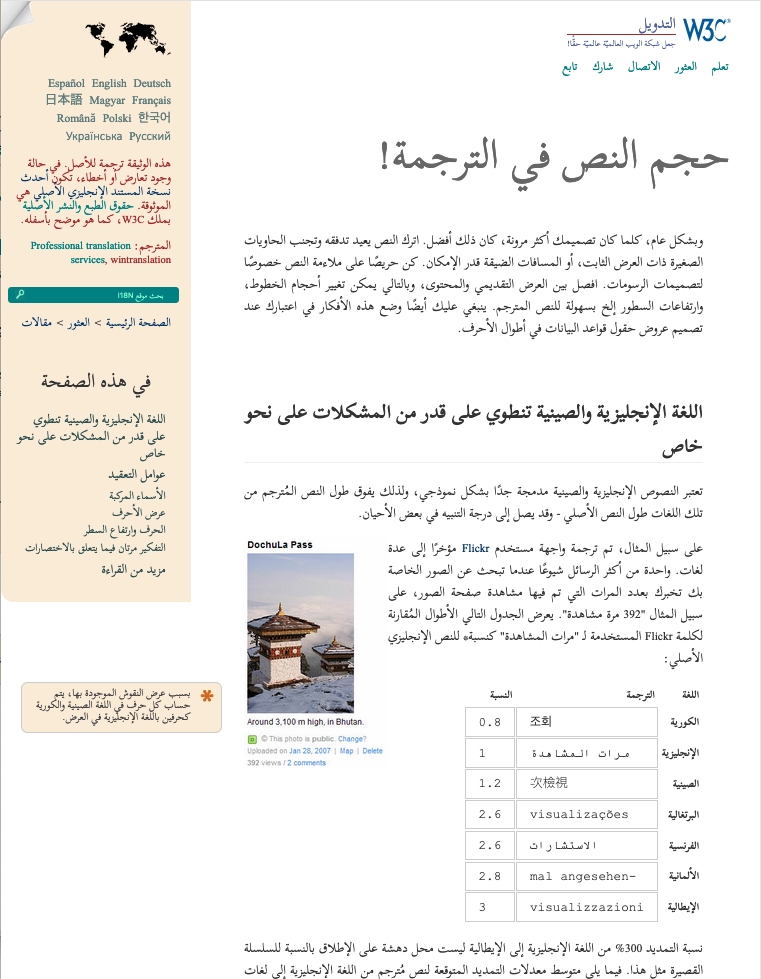
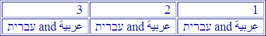
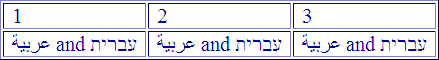
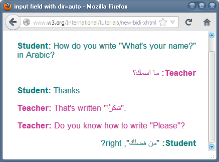
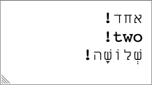
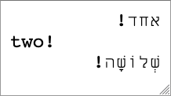

本文探讨了在HTML中处理结构标记文本方向的方法，也就是在网页级别以及段落、表格和表单等元素上的处理方法。
对于使用行内标记处理双向文本，请参阅另一篇文章HTML中的行内标记和双向文本，里面还描述了一些与方向相关的其他元素和属性。
dir属性用于设置文本显示的基方向，对于支持使用从右到左文字的语言至关重要，如阿德拉姆字母、阿拉伯字母、希伯来字母、西非书面字母、叙利亚字母和它拿字母。许多语言都用这些文字书写，包括阿拉伯语、迪维希语、希伯来语、曼丁卡语、普什图语、波斯语、富拉语、信德语、叙利亚语、乌尔都语、意第绪语等。
如果整个文档的书写方向是从右到左，在html标签中添加dir="rtl"。
在html元素里，只有在极少数情况下，当基方向需要改变以使文本正确显示时，才在结构元素上使用dir属性。
永远不要使用CSS来应用基方向。在与外边距、内边距、对齐等相关的属性或值上使用逻辑属性（'end'和'start'），以便在本地化过程中轻松管理方向变化。不要用值为'right'和'left'的HTML属性。
在表单和插入的文本上将dir属性设置为auto，以便网页运行时自动检测内容的方向。考虑在表单上使用dirname属性，除了常规表单数据外，还向服务器发送方向的信息。
处理双向行内文本在文章HTML中的行内标记和双向文本中进行了讨论。
包含阿拉伯字母和希伯来字母的代码示例可能以不同方式显示，通常都不令人满意。在本文中，代码示例中的从右向左的文本可能用大写字母表示，从左到右文本用小写表示。
首先，理解基方向的概念很重要（请参阅Unicode双向文本算法基础，了解它如何与Unicode双向文本算法配合工作的简单概述）。
为文本建立适当的基方向非常重要，为了让Unicode双向文本算法就可以在显示时适当地重新排列文本。正确设置基方向还会设置文本的默认段落对齐方式。
在HTML中，基方向由使用dir属性的最近父元素显式设置（可能是html元素）。在没有dir的情况下，默认为从左到右（LTR）。
当整个文档方向为从右到左（RTL）时，在html标签中添加dir="rtl"。这为整个文档设置了默认的基方向。文档中的所有块元素都将继承此设置，除非被覆盖。
<!DOCTYPE html>
<html dir="rtl" lang="ar">
<head>
<meta charset="utf-8">
... 对于基方向为从左到右的文档，不需要dir属性，因为这是默认值，但使用值为ltr的属性也无害。
这将在渲染的页面中产生如下效果：
alt属性或title属性）将使用该元素的文本方向。

html标签中添加dir属性之前（左）和之后（右）内容的外观。（点击图像放大）页面的LTR/RTL方向不应影响滚动条的位置，因为这些是浏览器界面的一部分，由用户决定，而不是由页面的语言决定。
title元素HTML中title元素中的文本通常显示在标签页标题、书签等地方。在显示时，浏览器应该自动应用title元素在文档中的基方向。比如，如果html标签声明文档方向为RTL，则title元素文本应以RTL基方向显示。
在撰写本文时，浏览器倾向于从右到左显示RTL标题文本，反之亦然。但是，它们这样做不是通过检查标记应用于文本的方向，而是通过找到标题中第一个强方向性字符并假设这是正确的基方向。
大多数时候这会产生期望的结果。但是，如果RTL文档中的标题文本以拉丁字母的缩写词开头，在显示文本时顺序将是错误的（请参阅一些测试）。
这种情况的解决方法是在标题文本不以RTL字符开头时，在标题文本的开头添加‏。这在开头添加了U+200F RIGHT-TO-LEFT MARK，这是一个不可见的、强方向性的RTL字符。
如果你有以强RTL字符开头的LTR文本，请在开头使用‎。
不要用CSS在HTML页面中设置基方向。
这是因为你希望在没有CSS的情况下也能获得方向信息。方向信息可能影响内容的语义，因此应该是标记的一部分。（请参阅更详细的解释）。
CSS和HTML规范都呼应了这一点。
只有当你需要更改一个块中内容的基方向时，才应该在块元素上用dir属性。
在html标签的级别建立基方向后，你可能不需要为页面上的任何块元素使用这个属性，因为在页面开始时设置的方向会渗透到所有块元素。
（但是，你可能需要将其用于双向文本的行内片段。这在HTML中的行内标记和双向文本中有更详细的描述。）
以下是如何在从右到左的文档中标记具有从左到右基方向的块元素的示例。
<blockquote dir="ltr" lang="en" cite="Romeo and Juliet (II, ii, 1-2)">But,
soft! What light through yonder window breaks?
It is the east, and Juliet is the sun.</blockquote>在英文页面中右对齐的文本通常需要在RTL页面中左对齐。可以自动实现这一点，而无需更改样式表中的所有CSS。解决方案是在设置样式时使用逻辑属性：也就是用start和end，而不是left或right。
默认使用逻辑属性，使得将来本地化内容或包含不同方向的文本变得更加容易。一段时间后，考虑开始和结束而不是左和右会变得自然，并且在处理CSS grid或flexbox布局等遵循相同模式的布局方法时对你很有用。
如果你希望定位的项目保持在固定位置，独立于文本的语言，左和右值偶尔还会有用。学会区分何时使用左/右而不是默认的开始/结束有助于你更加了解你的设计意图。
在主要浏览器引擎上享有互操作支持的逻辑值或属性名称包括：
text-align: start | end
justify-content: flex-start | flex-end ...
align-content: flex-start | flex-end ...
grid-column-start: <value>
grid-column-end: <value>
inline-size: <width>
margin-inline-start/end: <value>
padding-inline-start/end: <value>
border-inline-start/end-width: <value>
border-inline-start/end-style: <value>
border-inline-start/end-color: <value>
etc.
对于这些属性中的许多，也可以用block替换inline。这有助于在处理中文、日文、蒙古文等时在横排和直排模式之间切换。
当你在样式中用这些属性并将内容方向设置为RTL时，内容的对齐将开始视为右，结束视为左。如果你更改文本的方向，你不必担心也要调整样式。
在撰写本文时，一些主要浏览器引擎仍在等待采用其他属性。这些包括float、caption-side、clear和border-radius。此外，边距和内边距的快捷属性尚未实现。请参阅主要浏览器的测试结果。
其他建议包括：
dir设置基方向产生的对齐时，才使用text-align。left和right的HTML属性。相反，向你的CSS样式表添加选择器。这允许你使用逻辑属性，但也使在本地化过程中更改内容变得更容易。dir属性也会影响表格中列的流向。下图显示了从右到左文档中的表格（即html标签包含dir="rtl"）。表格单元格的内容右对齐，每个单元格中内容的流向是从右到左，列也从右到左运行。

你的浏览器中
| 1 | 2 | 3 |
| عربية and עברית | عربية and עברית | عربية and עברית |
在下面的表格中，代码dir="ltr"已添加到table元素中，如下所示：
<table dir="ltr"> … </table>注意列的顺序如何改变，单元格的内容现在如何左对齐（看数字），以及每个单元格内单词的流向现在如何从左到右（尽管单词本身仍然按字符逐个以相同方向阅读）。

你的浏览器中
| 1 | 2 | 3 |
| عربية and עברית | عربية and עברית | عربية and עברית |
但是，没有改变的是表格本身在其包含块内的对齐方式。它仍然在右侧。
如果出于某种原因，你想使用标记（而不是样式）使表格出现在左侧并重新排列列（也许因为你将表格视为从左到右方向块的一部分），你需要将其包装在类似div元素中，并将dir="ltr"添加到该元素以实现该效果。（不要使用CSS的text-align，因为这会影响表格单元格！）请参阅下面表格的第三个渲染，现在是左对齐的。
你的浏览器中
| 1 | 2 | 3 |
| عربية and עברית | عربية and עברית | عربية and עברית |
注意：我们不必在表格本身上重复dir属性，但列从左到右运行。
如果dir属性的值设置为auto，浏览器将查看元素中第一个强类型字符，并从中确定元素的基方向应该是什么。如果是希伯来字母（或阿拉伯字母等）字符，元素将获得rtl方向。如果是拉丁字母，方向将是ltr。
在某些边缘情况下，这可能不会给出期望的结果，但绝大多数情况下会产生预期的结果。
应用于块元素时，当你事先不知道插入页面的文本方向时，auto很有用。它对于表单也特别有用。
应用程序经常在运行时通过从数据库或其他位置提取信息将文本插入页面，无论是通过PHP等服务器端脚本、使用AJAX还是其他方法。这样的文本可能是多语言/多文种的，文本的方向可能事先不知道。（多文种文本在主要从右到左的页面中比在其他页面中更常见。）
这样的插入文本通常是在行内的，dir属性的auto值和另一个叫bdi的元素在处理这种情况时会发挥作用。它们在内联标记中的使用在文章HTML中的行内标记和双向文本中有更详细的描述。
有时标记块级内容也很有用。例如，在既有乌尔都语又有英语帖子的论坛中，或者单个帖子中的文本是希伯来语和英语段落的混合。只需将dir="auto"添加到围绕每个帖子的元素，元素中第一个强类型字符将确定该元素内容的方向。
HTML5规范给出了与聊天会话相关的示例。给定以下标记：
<p dir="auto" class="u1"><bdi>S</bdi>: <span class="msg">How do you write "What's your name?" in Arabic?</span></p>
<p dir="auto" class="u2"><bdi>T</bdi>: <span class="msg"> ما اسمك؟</span></p>
<p dir="auto" class="u1"><bdi>S</bdi>: <span class="msg">Thanks.</span></p>
<p dir="auto" class="u2"><bdi>T</bdi>: <span class="msg">That's written "شكرًا".</span></p>
<p dir="auto" class="u2"><bdi>T</bdi>: <span class="msg">Do you know how to write "Please"?</span></p>
<p dir="auto" class="u1"><bdi>S</bdi>: <span class="msg">"من فضلك", right?</span></p>浏览器将显示以下内容：

你的浏览器中
S: How do you write "What's your name?" in Arabic?
T: ما اسمك؟
S: Thanks.
T: That's written "شكرًا".
T: Do you know how to write "Please"?
S: "من فضلك", right?
注意在搜索第一个强类型字符时，浏览器如何跳过bdi元素中的文本。它还跳过script、style和textarea元素中的文本，以及任何具有dir属性的元素。
还要注意，这种方法并非万无一失：此示例中的最后一段被误解为从右到左的文本，因为它以阿拉伯字母开头。这导致该行右对齐，文本"right?"位于阿拉伯文本的左侧，问号在最左边。
许多具有从右到左语言界面或从右到左语言数据源的Web应用需要显示或接受LTR和RTL数据作为输入。应用通常不知道，也无法控制数据的方向。
input元素中正确显示文本销售多种语言书籍的在线书店需要处理原始书名，不管UI的语言是什么。因此，希伯来语或阿拉伯语书名可能出现在英语界面中，反之亦然（这个问题在RTL页面中实际上更加普遍）。标题的方向可能作为单独的属性可用，但更可能不是。
在以下示例中，我们在英语用户界面中搜索希伯来语标题הצהחת קידוד תװי CSS。
如果不采取措施防止，你会注意到 (a) 单词“CSS”出现在错误的位置（它应该在左边）， (b) 文本保持左对齐而不是右对齐。也许更糟糕的是，在某些情况下，由于光标和标点符号在数据输入期间跳跃以及选择文本的困难，输入相反方向数据的用户体验可能相当尴尬。
你的浏览器中
books
高级图书搜索
解决方案是只需在input标签中添加dir="auto"。
你的浏览器中
books
高级图书搜索
由于第一个强字符是从右到左的，auto值导致输入字段也是从右到左的。
如果用户搜索的下一本书有英文标题，文本将自动左对齐，基方向将设置为LTR。
textarea（和pre）段落中交替方向性textarea和pre元素都可以包含多个文本段落，并且无法对这些段落应用标记。
如果textarea元素继承或设置rtl方向，所有段落都将右对齐，但应该具有LTR基方向的段落不会有它。比如，在下图中，与单词'two'相关的感叹号应该出现在右边，而不是左边。

你的浏览器中
如果你在元素上将dir设置为auto，则根据该段落中第一个强字符的方向，独立地为每个段落分配基方向。RTL和LTR段落也以不同方式对齐。

你的浏览器中
当一行不包含强方向性字符时，如'123-456'，使用LTR基方向来排列字符，但是该行的对齐目前因浏览器而异。Webkit浏览器保持文本右对齐，而Blink和Gecko浏览器将其左对齐。将来所有浏览器可能都会基于前一段落的对齐来对齐这样的行。
dirname向服务器报告方向当你通过使用dir="auto"、使用JavaScript，甚至使用浏览器特定的按键或菜单让浏览器动态地对表单字段中的文本使用正确方向时，dirname属性允许你将该信息传递给服务器，以便在另一个上下文中显示文本时可以重新使用。
以下是使用它的示例：
<form action="addcomment.cgi" method="get">
<p><label>Comment: <input type="text" name="comment" dirname="commentdir" required></label></p>
<p><button name="mode" type=submit value="add">Post Comment</button></p>
</form>你的浏览器中
表单字段的方向最初设置为'auto'。点击按钮查看dirname是否将表单字段的计算方向分配给'comment-direction'参数（发送到服务器）。你也可以尝试手动更改方向。
dirname的值可以是你想要的任何值（但不能为空）。设置后，表单使用你提供的名称将元素的方向传递给服务器。因此，如果用户在上面的示例中将表单输入字段的方向切换为RTL并输入مرحبا, ，那么当提交表单时，提交正文将如下所示：
comment=%D9%85%D8%B1%D8%AD%D8%A8%D8%A7&commentdir=rtl&mode=add然后可以使用方向信息在另一个页面上显示文本时应用正确的方向。
当然，当dir设置为rtl或ltr时，此属性也可以用于提交输入字段的方向。这对于存储各种语言数据的数据库可能很有用。
浏览器可能允许用户使用按键设置表单输入字段的基方向。设置正确的基方向可以显著改善用户体验，特别是如果他们输入的文本包含标点符号和数字。不幸的是，每个浏览器都有不同的方法来做到这一点。本节列出了一些主要桌面浏览器的操作方法。
在某些情况下，你需要设置系统才能使其工作。例如，对于IE浏览器，你可能需要安装希伯来语包并启用希伯来语键盘才能使其工作。
Chrome：右键单击input或textarea元素以显示书写方向子菜单。选择从右到左或从左到右。这设置元素的dir属性的值，然后脚本可以使用该值。
Safari：右键单击input或textarea元素以显示段落方向子菜单。选择从右到左或从左到右。这设置元素的dir属性的值，然后脚本可以使用该值。
Firefox：使用CTRL/CMD+SHIFT+X键盘快捷键设置方向，它在LTR和RTL之间循环。这设置元素的dir属性的值，然后脚本可以使用该值。
Internet Explorer：使用CTRL+LEFT SHIFT设置LTR，使用CTRL+RIGHT SHIFT设置RTL。（这些组合键也被大多数Microsoft产品采用，例如Windows对话框、记事本和Word。）它们设置元素的dir属性的值，然后脚本可以使用该值。
试试看：
相关链接，编写网页